Veil

The brief
Veil is a storytelling card game set in the late Victorian era, telling stories of characters from that time period. Players take turns interpreting the cards a Spirit picks, their Past, Present and Future cards. As the Players begin to interpret them, the Spirit provides filters that change the interpretation of the card.
It was built with Tori Smith, Camron Gonzalez, and Leslie Zeng and was presented at the NYU Game Center 2022 Spring Showcase.
The approach
We wanted to utilise the physicality of the game to create a variable interpretation, with blue and red filters which hide the section of the image using the same colour.
That took a lot of print testing. Colours that read clearly on screen didn’t read on paper. Blue was the worst of them, we couldn’t get it to match consistently across prints, so we ran a swatch sheet to lock the colours before committing to the deck. We had specific colour of acrylic sheets so we needed so make the print match the Blue perfectly for the Filter to work correctly.
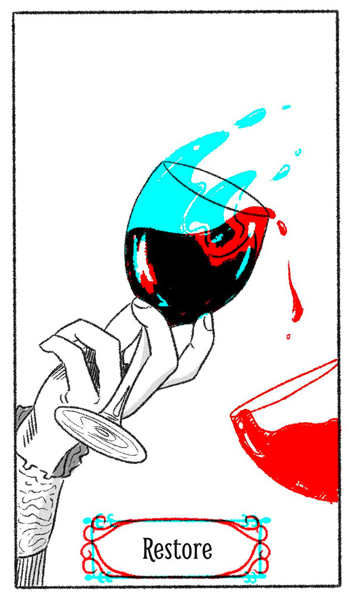
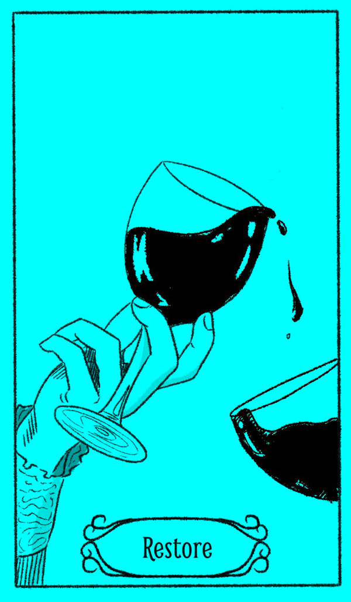


The work
The filters are the heart of the design. We arrived at the final filter set after a lot of paper prototyping, colour swatches that read on screen often didn’t read in person. We had limitations with the acrylic colours so only the card print could be modified freely.
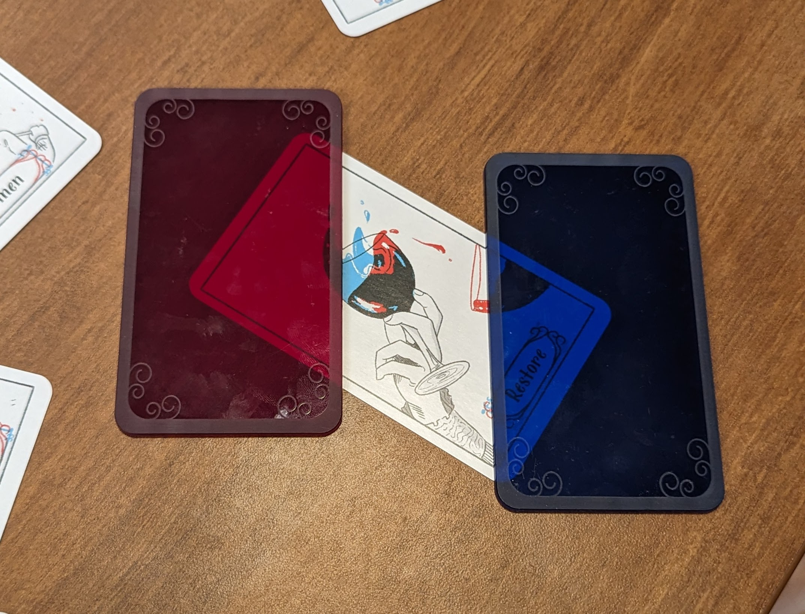
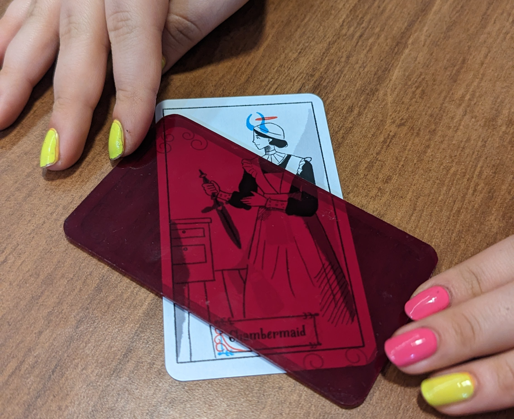
Setup is quick. The Spirit takes their place at the head of the table; the Mediums (everyone else) sit facing them. The deck is laid out for the three readings, Past, Present, Future , and the seance begins. The rules are intentionally light: the Spirit guides, the Mediums interpret.
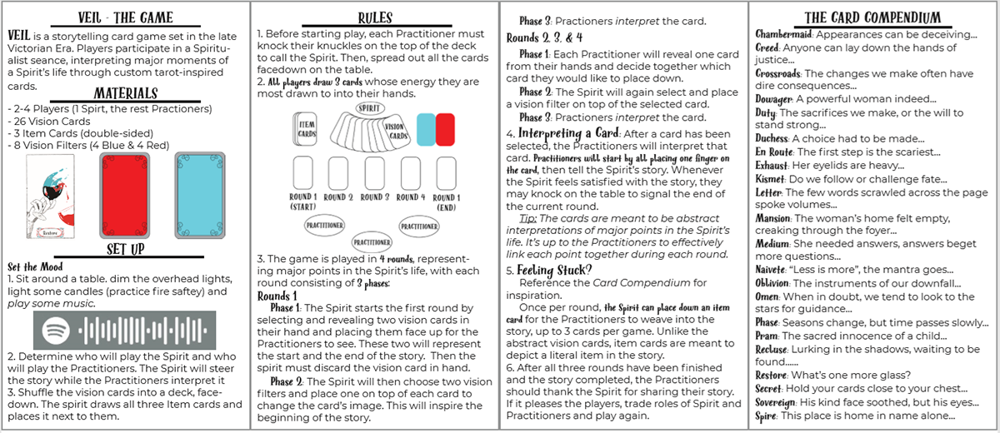
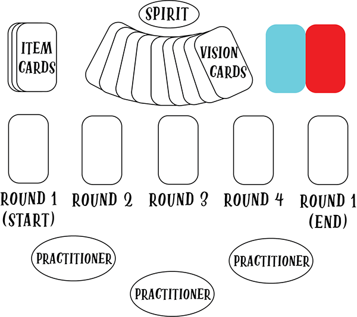
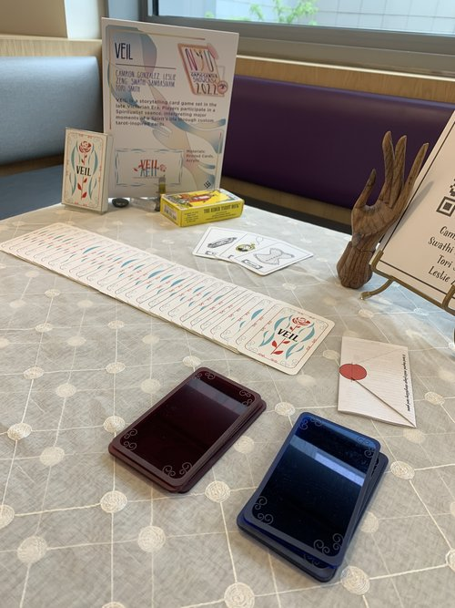
I illustrated the deck. The visual language uses Victorian clothing and motifs with a tarot card twist, I had to take into account that after the base illustration the blue and red parts needed to change its interpretation. This took some back and forth and lots of planning.
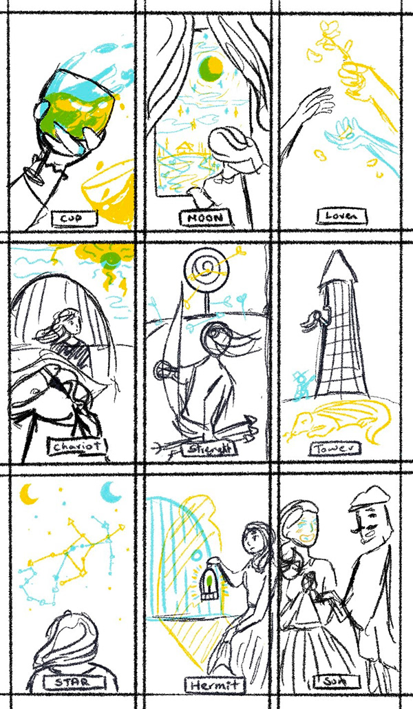
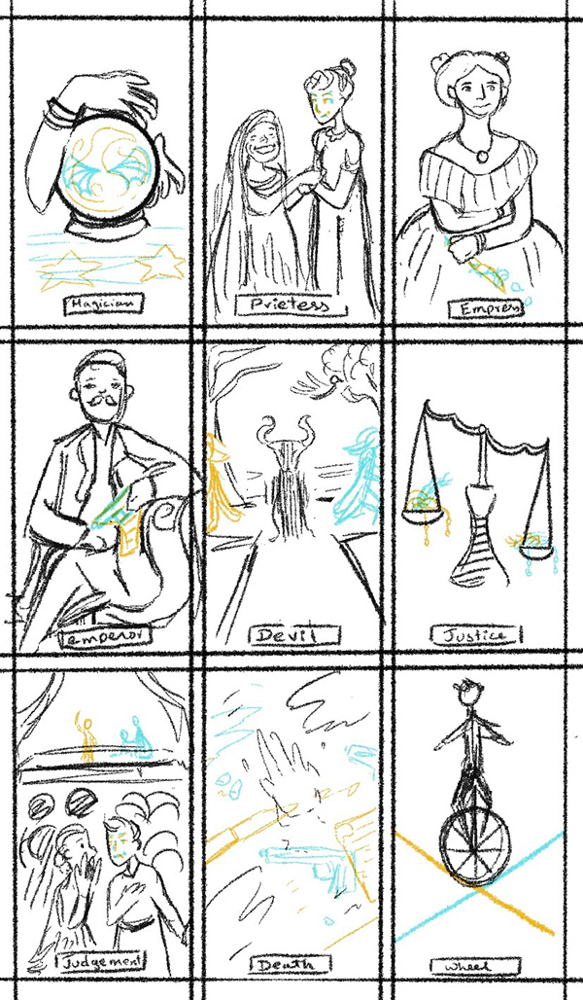
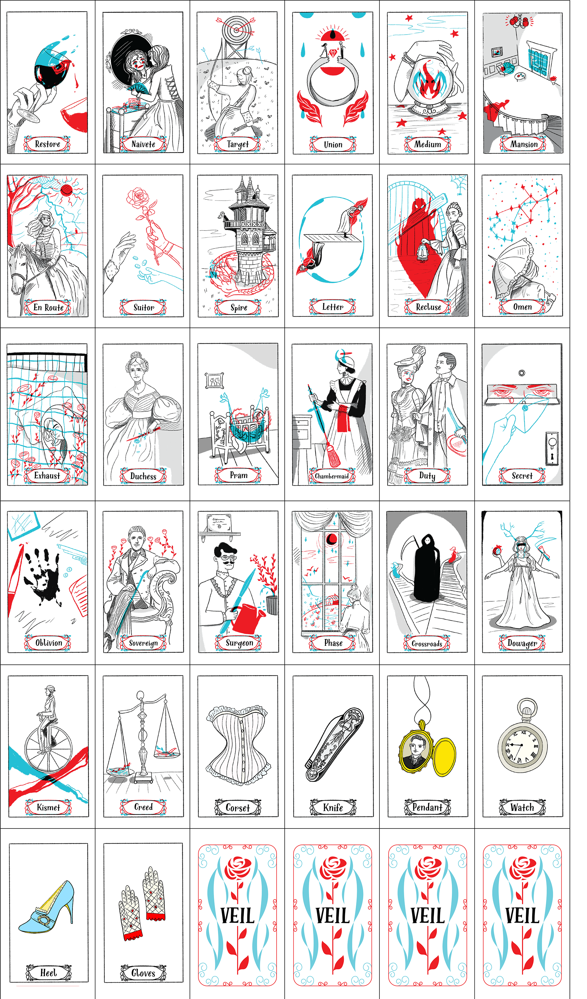
At the NYU Spring Showcase, and in previous tests it became clear this is a game best played with close friends or family as weaving in jokes and interpretations that reflected their real life, heighten the excitement and joy of the game.
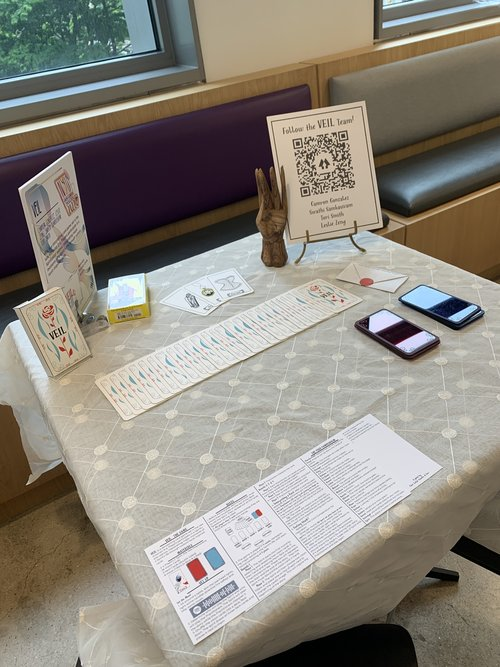
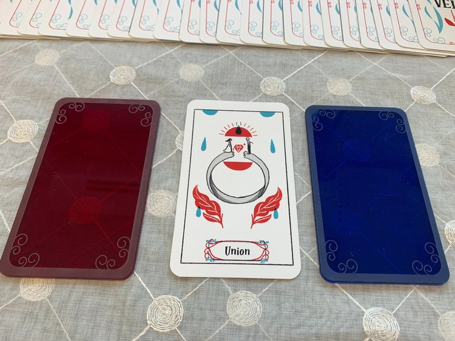
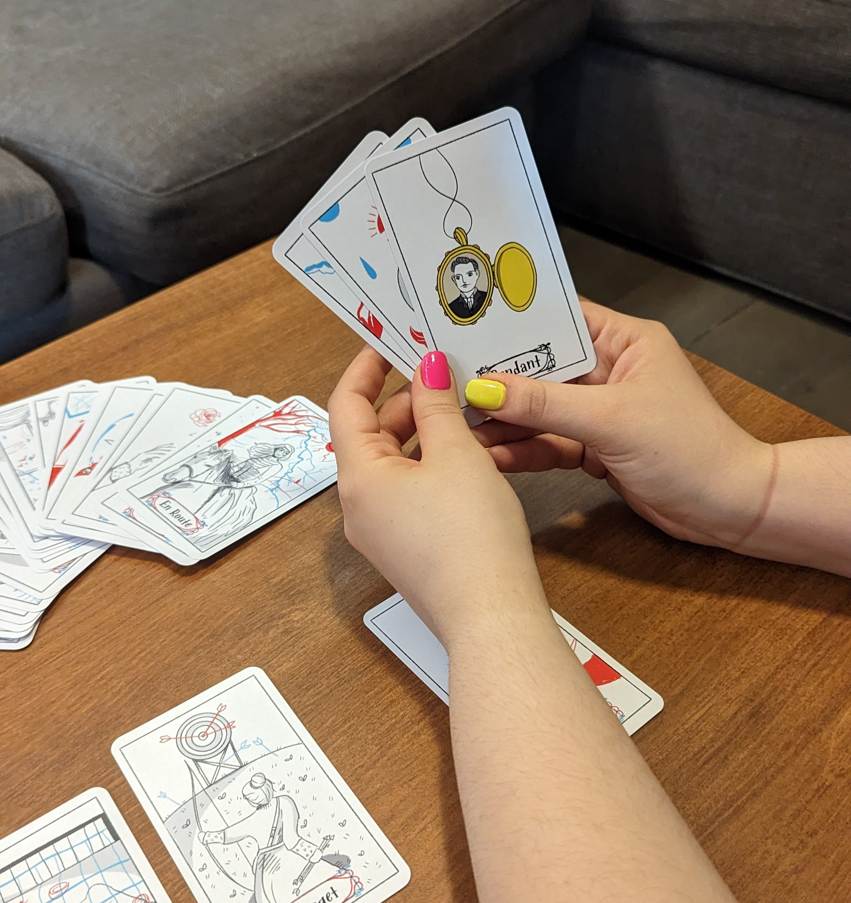
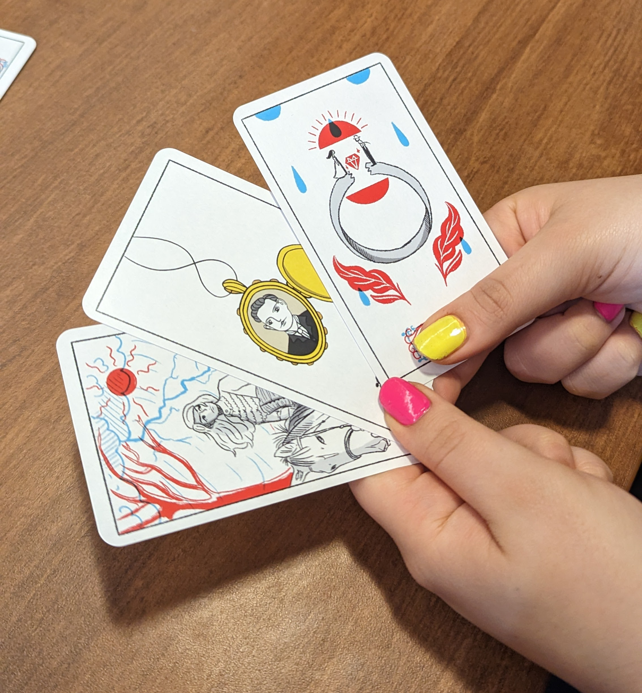
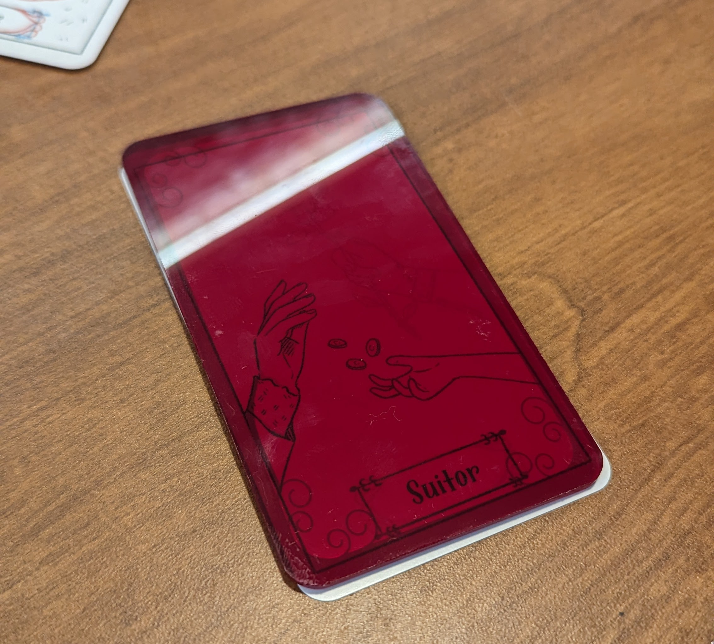
Credits
Team
Swathi Sambasivam
Tori Smith
Camron Gonzalez
Leslie Zeng
Tools
Procreate · Illustrator
Photoshop
Card stock & print prototyping
Recognition
NYU Spring Showcase · 2022